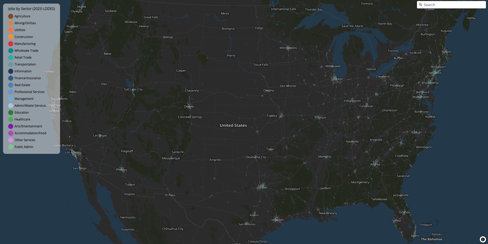
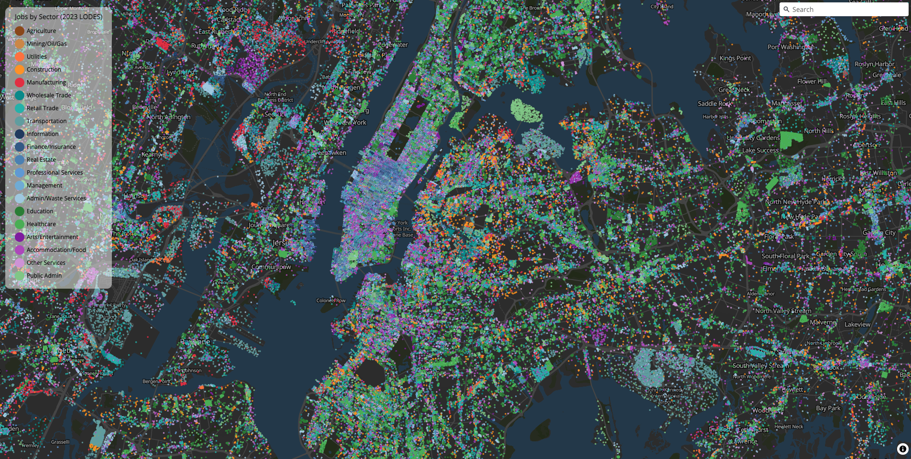

freestile_query(
query = "SELECT naics, state, ST_Point(lon, lat) AS geometry FROM jobs_dots",
output = "us_jobs_dots.pmtiles",
db_path = db_path,
layer_name = "jobs",
tile_format = "mvt",
min_zoom = 4,
max_zoom = 14,
base_zoom = 14,
drop_rate = 2.5,
source_crs = "EPSG:4326",
streaming = "always",
overwrite = TRUE
)Overview
freestiler is a Rust-powered vector tile engine for R and Python. It takes sf data frames or GeoDataFrames and produces PMTiles archives – self-contained, single-file tilesets that can be served statically or viewed locally. The whole pipeline runs in-process: no tippecanoe, no Java, no Go.
freestiler supports two tile formats:
- MLT (MapLibre Tiles) – the default. A next-generation columnar binary format for efficient vector tile encoding.
- MVT (Mapbox Vector Tiles) – the widely supported protobuf-based format.
The package is designed for two very different use cases:
- small reproducible examples, where you want a quick path from spatial data to PMTiles
- serious tiling jobs, where your data already lives in DuckDB and you want to stream directly from SQL
Installation
R
Install from r-universe:
install.packages("freestiler", repos = "https://walkerke.r-universe.dev")The r-universe build is the recommended install for serious DuckDB-backed workloads. Native macOS and Linux builds include the Rust DuckDB backend by default, including the streaming point pipeline used by freestile_query(). Windows currently uses the R duckdb fallback by default while the GNU DuckDB toolchain issue is sorted out.
Or install the development version from GitHub:
# install.packages("devtools")
devtools::install_github("walkerke/freestiler")Python
Install from PyPI:
pip install freestilerPublished wheels include the native feature set, including DuckDB-backed file input and SQL query support.
See the Python Setup article for detailed installation instructions, virtual environment setup, and optional source builds.
What makes freestiler different
- One Rust tiling engine for both R and Python
- PMTiles output by default
- Direct file tiling without loading everything into R or Python first
- DuckDB query tiling
- Streaming point pipeline for large DuckDB queries
- Cross-platform support (Windows, MacOS, Linux)
A serious-workload example
The small examples in this vignette are reproducible and easy to follow. But the same API is built to handle much larger jobs.
On a recent local run, freestile_query() streamed 146,575,672 US job points from DuckDB into an MVT PMTiles archive in about 12 minutes, producing a 2.3 GB output with 978,589 tiles.


Creating your first tileset
The main function is freestile(). Pass it spatial data and an output path.
R
library(sf)
library(freestiler)
nc <- st_read(system.file("shape/nc.shp", package = "sf"))
freestile(nc, "nc_counties.pmtiles", layer_name = "counties")Creating MLT tiles (zoom 0-14) for 100 features across 1 layer...
Tiling layer 'counties' (zoom 0-14)...
Created nc_counties.pmtiles (65.2 KB)This counties example is intentionally simple. It is useful for verifying that your installation works, but it is not the most interesting demonstration of what the package can do.
Python
import geopandas as gpd
from freestiler import freestile
gdf = gpd.read_file("nc.shp")
freestile(gdf, "nc_counties.pmtiles", layer_name="counties")Creating MLT tiles (zoom 0-14) for 100 features across 1 layer...
Tiling layer 'counties' (zoom 0-14)...
Created nc_counties.pmtiles (65.2 KB)Viewing tiles
R
Use the mapgl package to view your tileset in R. mapgl supports both MLT and MVT tiles. PMTiles need HTTP range requests, so start a local file server first:
# Serve from /tmp on port 8082 (pick whichever you prefer)
npx http-server /tmp -p 8082 --cors -c-1Then point mapgl at the URL:
library(mapgl)
maplibre() |>
add_pmtiles_source(
id = "counties-src",
url = "http://localhost:8082/nc_counties.pmtiles"
) |>
add_fill_layer(
id = "county-fill",
source = "counties-src",
source_layer = "counties",
fill_color = "#00897b",
fill_opacity = 0.5
) |>
add_line_layer(
id = "county-borders",
source = "counties-src",
source_layer = "counties",
line_color = "#004d40",
line_width = 1
)Python
Python viewer stacks are less settled than the R mapgl path. For maximum compatibility today, create tiles with tile_format="mvt":
freestile(gdf, "nc_mvt.pmtiles", layer_name="counties", tile_format="mvt")Viewer support for MLT in Python will improve as Python wrappers catch up with current MapLibre GL JS releases. In the meantime, MVT is the safe default for Python-facing examples, and either MVT or MLT can be viewed directly in the browser with current MapLibre GL JS.
MLT vs MVT format
The default format is MLT (MapLibre Tiles). To use MVT instead:
R
freestile(nc, "nc_mvt.pmtiles", layer_name = "counties", tile_format = "mvt")Python
freestile(gdf, "nc_mvt.pmtiles", layer_name="counties", tile_format="mvt")MLT is a columnar encoding that can be more compact than MVT, especially for polygon-heavy datasets. MVT is the universal fallback supported by all mapping libraries. Use MVT when maximum viewer compatibility is needed – particularly for Python viewers today and for large public-facing point tilesets.
Controlling zoom levels
The min_zoom and max_zoom parameters control the zoom range.
R
freestile(nc, "nc_z4_10.pmtiles",
layer_name = "counties",
min_zoom = 4,
max_zoom = 10
)Python
freestile(gdf, "nc_z4_10.pmtiles",
layer_name="counties",
min_zoom=4,
max_zoom=10
)Feature dropping with drop_rate
For large datasets, drop_rate provides exponential feature thinning at lower zoom levels. Points are thinned using spatial ordering (Morton curve) to maintain even coverage; polygons and lines are thinned by area.
The base_zoom parameter controls the zoom level above which all features are present. Below base_zoom, features are progressively thinned. By default, base_zoom equals max_zoom.
R
freestile(nc, "nc_dropping.pmtiles",
layer_name = "counties",
drop_rate = 2.5,
base_zoom = 10
)Python
freestile(gdf, "nc_dropping.pmtiles",
layer_name="counties",
drop_rate=2.5,
base_zoom=10
)Direct file input
Tile spatial files directly without loading them into R or Python first.
R – supports GeoParquet, GeoPackage, Shapefile, and other formats via DuckDB:
# GeoParquet (uses the geoparquet engine)
freestile_file("census_blocks.parquet", "blocks.pmtiles")
# GeoPackage, Shapefile, or other formats (uses the DuckDB engine)
freestile_file("counties.gpkg", "counties.pmtiles", engine = "duckdb")Python – published wheels include the DuckDB engine, so GeoPackage, Shapefile, and other DuckDB-backed formats work out of the box:
from freestiler import freestile_file
# GeoParquet (uses the geoparquet engine)
freestile_file("census_blocks.parquet", "blocks.pmtiles")
# GeoPackage, Shapefile, or other formats (uses the DuckDB engine)
freestile_file("counties.gpkg", "counties.pmtiles", engine="duckdb")SQL queries with DuckDB
Run a SQL query through DuckDB’s spatial extension and pipe the results directly into the tiling engine. Filter, join, and transform your data with SQL before tiling.
R
freestile_query(
"SELECT * FROM ST_Read('counties.shp') WHERE pop > 50000",
"large_counties.pmtiles"
)
freestile_query(
"SELECT * FROM read_parquet('blocks.parquet') WHERE state = 'NC'",
"nc_blocks.pmtiles"
)Python
from freestiler import freestile_query
freestile_query(
"SELECT * FROM ST_Read('counties.shp') WHERE pop > 50000",
"large_counties.pmtiles"
)
freestile_query(
"SELECT * FROM read_parquet('blocks.parquet') WHERE state = 'NC'",
"nc_blocks.pmtiles"
)For very large point datasets, set streaming = "always" to force the streaming point pipeline:
freestile_query(
query = "SELECT category, ST_Point(lon, lat) AS geometry FROM points_table",
output = "points.pmtiles",
layer_name = "points",
tile_format = "mvt",
min_zoom = 4,
max_zoom = 14,
base_zoom = 14,
drop_rate = 2.5,
source_crs = "EPSG:4326",
streaming = "always"
)Multi-layer tiles
Pass a named list (R) or dictionary (Python) to create multi-layer tilesets.
R
pts <- st_centroid(nc)
freestile(
list(counties = nc, centroids = pts),
"nc_layers.pmtiles"
)Use freestile_layer() for per-layer zoom control:
freestile(
list(
counties = freestile_layer(nc, min_zoom = 0, max_zoom = 10),
centroids = freestile_layer(pts, min_zoom = 6, max_zoom = 14)
),
"nc_layers.pmtiles"
)Python – use freestile_layer() for per-layer zoom control:
from freestiler import freestile, freestile_layer
centroids = gdf.copy()
centroids.geometry = gdf.geometry.centroid
freestile(
{
"counties": freestile_layer(gdf, min_zoom=0, max_zoom=10),
"centroids": freestile_layer(centroids, min_zoom=6, max_zoom=14),
},
"nc_layers.pmtiles"
)Point clustering
For point layers, cluster_distance merges nearby points into clusters with a point_count attribute.
R
freestile(pts, "nc_clustered.pmtiles",
layer_name = "centroids",
cluster_distance = 50,
cluster_maxzoom = 8
)Python
freestile(centroids, "nc_clustered.pmtiles",
layer_name="centroids",
cluster_distance=50,
cluster_maxzoom=8
)Feature coalescing
The coalesce parameter merges features with identical attributes within each tile. Lines sharing endpoints are joined; polygons are grouped into MultiPolygons.
R
freestile(nc, "nc_coalesced.pmtiles",
layer_name = "counties",
coalesce = TRUE
)Python
freestile(gdf, "nc_coalesced.pmtiles",
layer_name="counties",
coalesce=True
)